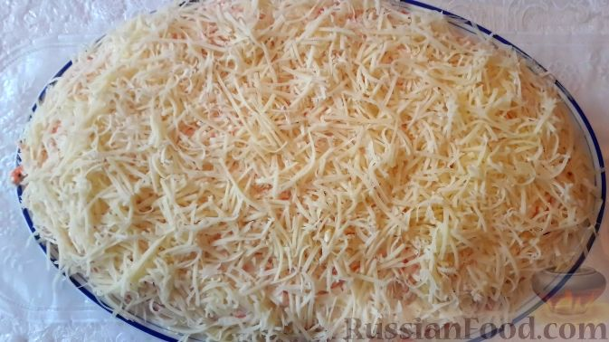

Название: «Мужские слёзы»
Продукты
- Куриное филе – 550 г
- Морковь по-корейски – 250 г
- Шампиньоны консервированные – 300 г
- Сыр «Фермерский» со сливками «Село Зелёное» – 150 г
- Яйцо деревенское СО «Село Зелёное» – 4 шт.
- Лук репчатый – 1 шт.
- Уксус 9% – 50 мл
- Майонез – 300-350 г
- Соль – по вкусу
Инструкция
- Куриное филе заливаем в кастрюле водой (опускаем в кипящую воду), добавляем соль. Варим на малом огне 25-30 минут после закипания. Остужаем (оставляем остывать филе в воде).
- Варим яйца вкрутую (8-10 минут), затем остужаем в холодной воде. Яйца «Село Зелёное» крупные, с яркими желтками.
- Лук очищаем и нарезаем мелкими кубиками.
- Нарезанный лук заливаем уксусом, перемешиваем и оставляем на 10-15 минут. Затем промываем.
- Корейскую морковь нарезаем мелкими кусочками.
- Консервированные шампиньоны нарезаем мелкими кубиками.
- Яйца очищаем и натираем на крупной терке.
- Куриное филе нарезаем кубиками.
- Собираем слоёный салат. Я использую для этого кулинарное кольцо. Первым слоем выкладываем курицу, слегка солим и утрамбовываем с помощью толкушки для пюре. Смазываем майонезом.
- Выкладываем слой лука.
- Слой грибов. Смазываем майонезом.
- Выкладываем яйца.
- Слой моркови по-корейски. Смазываем майонезом.
- Последним слоем салата будет сыр. Натираем его на мелкой терке.
- Оставляем салат в кольце немного пропитаться. Затем аккуратно снимаем кольцо.
- Салат «Мужские слёзы» готов, подаём его к столу. Приятного аппетита!